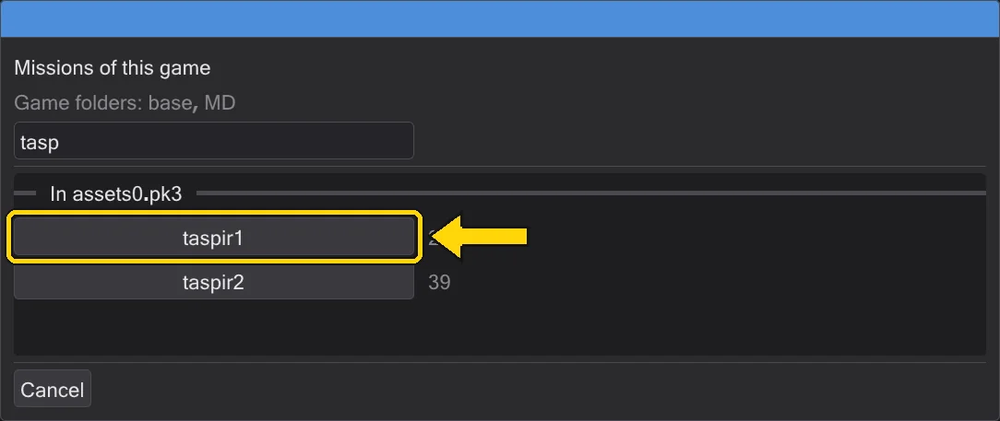
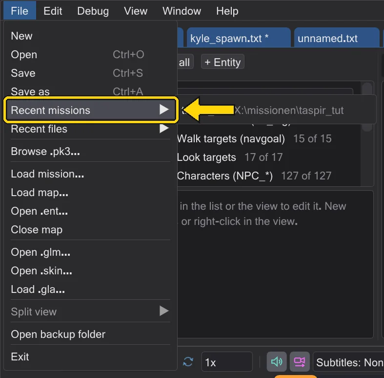
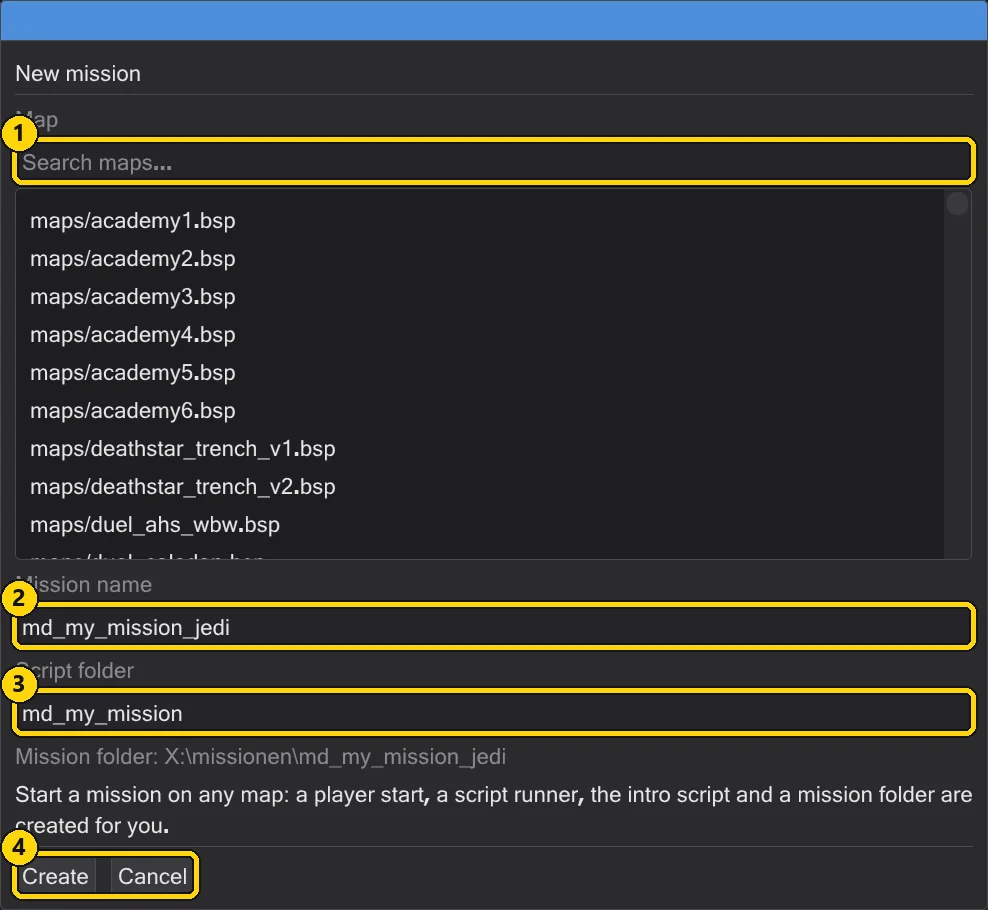
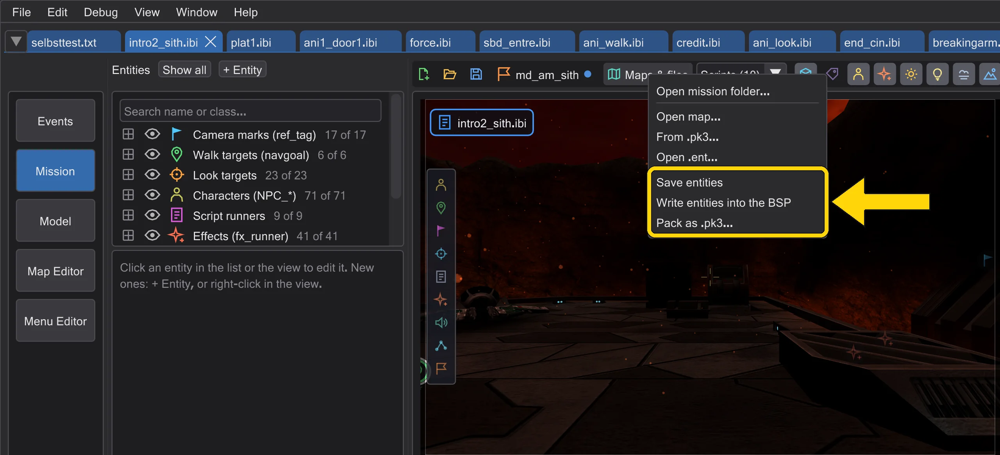
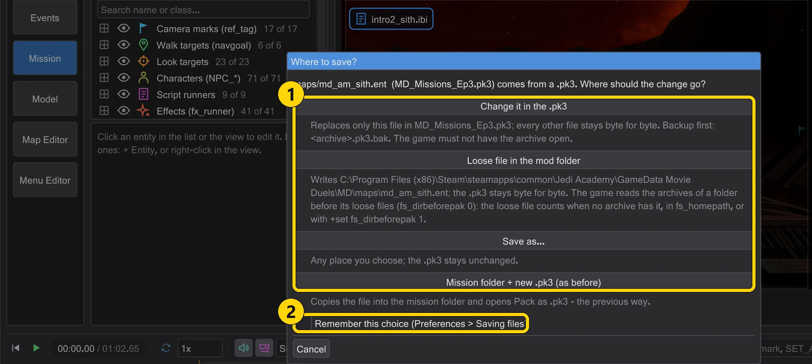
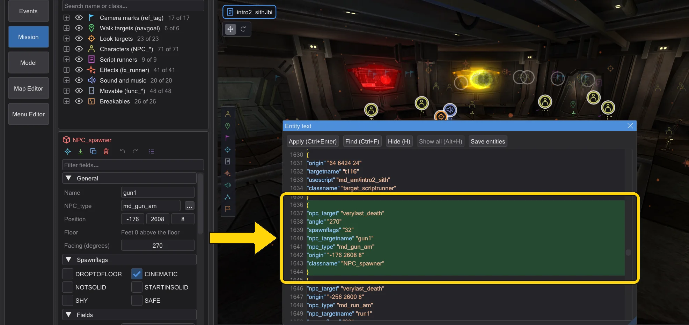
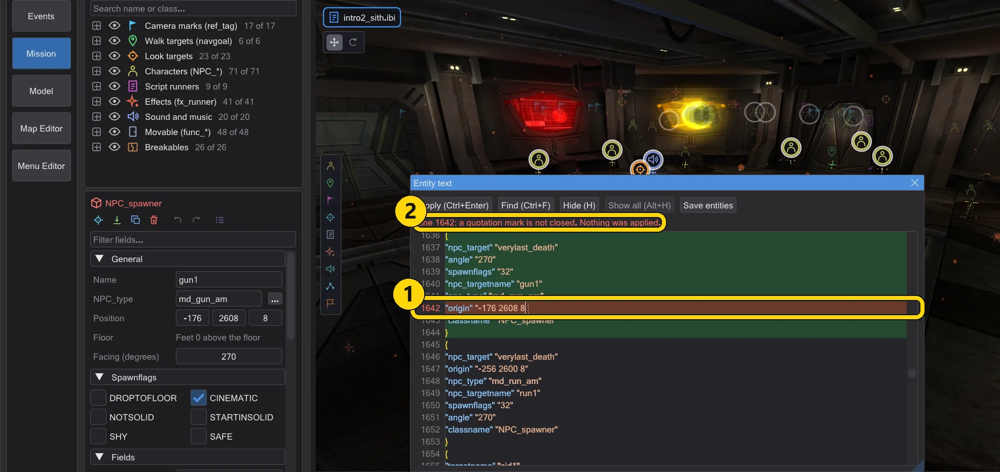
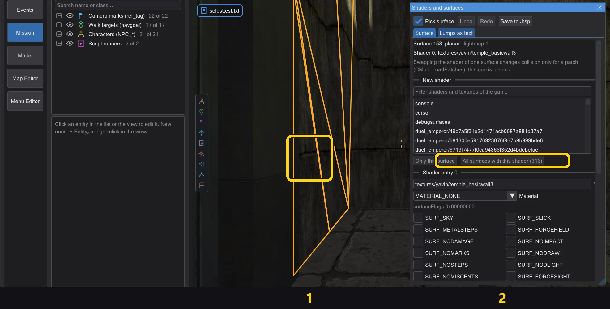
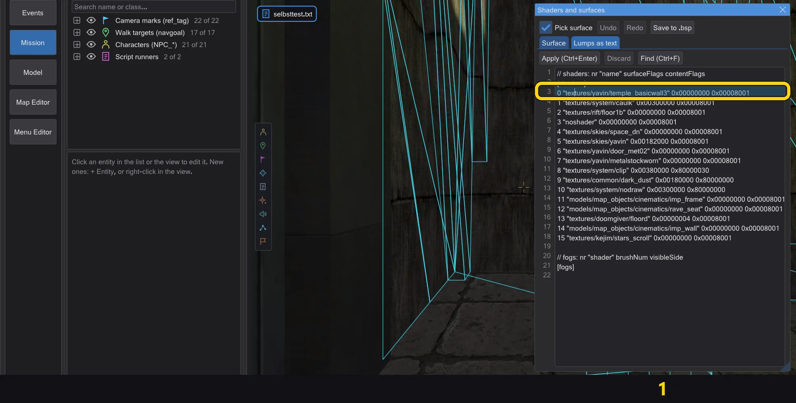
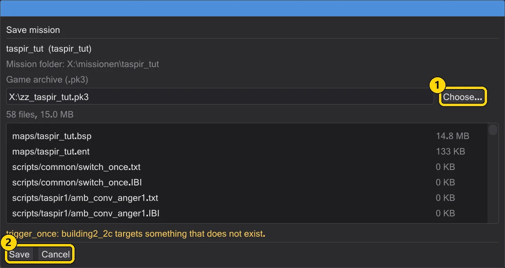

Missions
A mission is a map with its entities and all its scripts. Open one whole, build your own, and pack it into a .pk3 that the game loads.
Opening a mission#
Load mission (menu File or the map toolbar) picks a .pk3 and lists all missions of that game - the maps that have scripts, from every archive of the game folders, exactly as the game finds them (for a name, the archive that wins counts). It does not matter which archive of the game you pick: assets1.pk3 of plain Jedi Academy lists t1_sour, kor1, yavin1 … just like assets0.pk3. The missions of the chosen archive stand at the top; the others follow once they have been read (the maps are read in the background - the line above the list shows how far). The filter field narrows the list by name. Pick one and everything is set up: the map, its .ent with the mission's figures, and every script of the mission in its own tab. All tabs share the map and the camera.

The tabs open in the order in which the game starts the scripts. For this, JK Studio plays the map from the moment it loads, like the engine: the spawn scripts of the entities, the spawn script of worldspawn, trigger_always, NPC spawners without a targetname, the targets of the player start when the player enters the game - and everything that follows from them through run, use, relays, counters, spawners and kill with a death script. The tab of the first script is in front. Scripts that only the player sets off (a trigger he walks into, a fight) come last, in the order of the entities.
Which game folders apply is decided by the archive: if its folder is one of your game folders (Edit → Game folders), those are used. If it belongs to another installation - its base, or a mod folder next to a base - JK Studio uses that installation's folders for this session only, in the engine's order (base, then the mod), and does not mix in your configured folders. A .pk3 in any other folder is added behind your game folders, also only for this session. Nothing is saved: the game folders window shows the folders of the session with a button back to your own (Use the configured game folders). Each mission tab keeps the folders of its game: with a Jedi Outcast mission in one tab and a Jedi Academy mission in another, switching tabs switches the game folders and the rule set with them.
Recent missions#
File → Recent missions and the start page list the missions you opened last - from an archive or from a mission folder. One click opens the whole project again: map, entities and all scripts. An entry whose file is gone is removed from the list.

A new mission#
New mission starts a mission on any map. Choose the map, give the mission a name (letters, digits and _; the game loads it as maps/<name>.bsp, so devmap <name>), and a script folder. JK Studio creates a player start, a script runner, the intro script and a mission folder under Documents\behaved\missions. The intro runs when the player spawns.

A mission that was never packed lives in its folder; Open mission folder continues it after a restart.
Saving files where they were opened#
Every opened file remembers where it came from: a loose file on disk, or a .pk3 and the entry in it. A loose .bsp, .ent or script is saved back to its path without a question - no copy under Documents, no new .pk3.
- Save (Ctrl+S) saves the script of the tab, each tab on its own.
- Save entities writes the entities as
.entwhere it was opened, otherwise next to the.bsp. The game prefers a.entnext to the map over the entities inside the.bsp. - Write entities into the BSP writes the entities into the
.bspitself - byte for byte what the map editor's-onlyentsproduces: geometry, lightmaps and light grid stay untouched. Before overwriting, the old file is kept as<map>.bsp.bak. - Save mission saves every file of the mission at its place. Pack as .pk3 (menu Maps files) packs the mission into a
.pk3only when you want it.

From a .pk3. A file that came from an archive asks where the change should go. Tick Remember this choice (Preferences > Saving files) to keep the choice; Preferences → Saving files changes it later.

.pk3 (here the entities of md_am_sith).| No. | Name | What it does |
|---|---|---|
| 1 | Change it in the .pk3 | Replaces only this entry; every other entry is copied byte for byte, not repacked. Backup <archive>.pk3.bak. If the game has the archive open, a message says so and nothing changes. |
| 2 | Loose file in the mod folder | Writes the file into maps/ or scripts/ of the mod folder; the .pk3 stays byte for byte. |
| 3 | Save as | Any place you choose. |
| 4 | Mission folder + new .pk3 (as before) | The previous way: copy into the mission folder, then pack a new .pk3. |
fs_dirbeforepak 0). A loose file in the same mod folder counts only when no archive contains it, when it lies in fs_homepath, or with +set fs_dirbeforepak 1. Every save goes through a temporary file next to the target and is renamed only when everything was written - if anything fails, the old file stays unchanged and no saved message appears.Preferences → Saving files: the way for files from a .pk3, Previous mission folder workflow (copies in the mission folder and a new .pk3, as before) and New scripts get the BehavEd template (off: a new script starts empty).
Editing entities as text#
Window → Entity text shows the whole entity list as text in the .ent format, with line numbers and colours for keys and values. Click into a block and the entity is selected in the 3D view; select an entity in 3D and the text jumps to its block and highlights it from { to }.

{ to } (md_am_sith).- Apply (Ctrl+Enter) reads the text exactly like the game (comments
//and/* */, words without quotation marks) and replaces the entities in one undo step. If something is wrong - a missing}or quotation mark, more than 64 keys or 2048 characters in one entity, a first entity that is not worldspawn - a message names the line, the line turns red and nothing is applied. - Lines with
origin,angle,angles,modelscale,modelscale_vec,lightand_colorwork while you type: only that entity changes, and the whole typing is one undo step. - The text stays as you wrote it: order, blank lines and comments are saved with Save entities. If you change something in the inspector or with the gizmo, only the affected line is rewritten; a missing key gets its own line.

| No. | Name | What it does |
|---|---|---|
| 1 | Ctrl+Enter | Apply the text. |
| 2 | Ctrl+F | Find: every match is highlighted; F3 next, Shift+F3 previous, Esc removes the highlight. |
| 3 | Ctrl+H | Find and replace. |
| 4 | H | Hide the selected entities in the 3D view - in the panel outside the text field, and over the map. |
| 5 | Alt+H | Show all entities again. |
Files in the game folders are read like the game does: later folders win, and within a folder its .pk3 files come before its loose files (fs_dirbeforepak 0). If you start the game with +set fs_dirbeforepak 1, turn on Loose files before the .pk3 of the same folder (fs_dirbeforepak 1) in the preferences under the game folders.
Changing shaders and flags of compiled maps#
Window → Shaders and surfaces edits the shaders, fogs and surfaces of the open .bsp without compiling it again: geometry, lightmaps, light grid, visibility and entities stay byte for byte. In the map editor the window works on a map opened with File → Open .bsp...; tick Show the edited map as in the game to see the edited map in the camera.

- Click: with Pick surface a left click in the 3D view picks a surface. The tab Surface shows its kind, lightmap, shader and fog. Choose a new shader from the shaders and textures of the game and apply it to Only this surface or to all surfaces with the same shader; a new shader is appended to the shader lump and keeps the flags of the old one.
- Flags: material, surfaceFlags and contentFlags as check boxes, named as in the game's
surfaceflags.h(Jedi Academy, Movie Duels and Jedi Outcast use the same bits; Movie Duels calls material 31 MATERIAL_LAVA). The window says how many brushes, brush sides and patches use the shader - the game takes contents only from brushes and patches, so collision changes only there. - Text: the tab Lumps as text shows one line per shader (
nr "name" surfaceFlags contentFlags) and per fog (nr "shader" brushNum visibleSide). Change names or flags, add a line with the next number for a new shader and press Ctrl+Enter. A click into a line highlights its surfaces in 3D. - Both ways change the same document; every apply is one undo step (Ctrl+Z while the window has the focus). Save to .bsp writes the
.bspon the ways known from the entities: a loose file with a backup.bak, from a.pk3into the archive, loose into the mod folder or anywhere.

$lightmap stage shows no lightmap in the game; on a surface without a lightmap, a shader with one gets the white image.Saving a mission#
Pack as .pk3 shows what will go into the archive - every file with its size - and checks the mission first: a script that an entity uses but that does not exist, a script that does not compile, no player start, a target that points nowhere, a .str without ENDMARKER, a path that leaves the game folder, an entity with more keys or characters than the game allows. Errors (red) must be fixed, warnings (orange) may stay. Save compiles the scripts, adds your own ROFF files and packs the .pk3 into the game folder; a new mission also gets its scripts, .ent and .IBI in its mission folder.

| No. | Name | What it does |
|---|---|---|
| 1 | Game archive (.pk3) | Where the .pk3 is written; Choose picks another place. |
| 2 | Save / Cancel | Saves, compiles and packs - or closes the window. Above them: every file of the package and the checks. |
zz_<name>.pk3, so it wins over older files. Start the game and type devmap <name> in the console to play it.